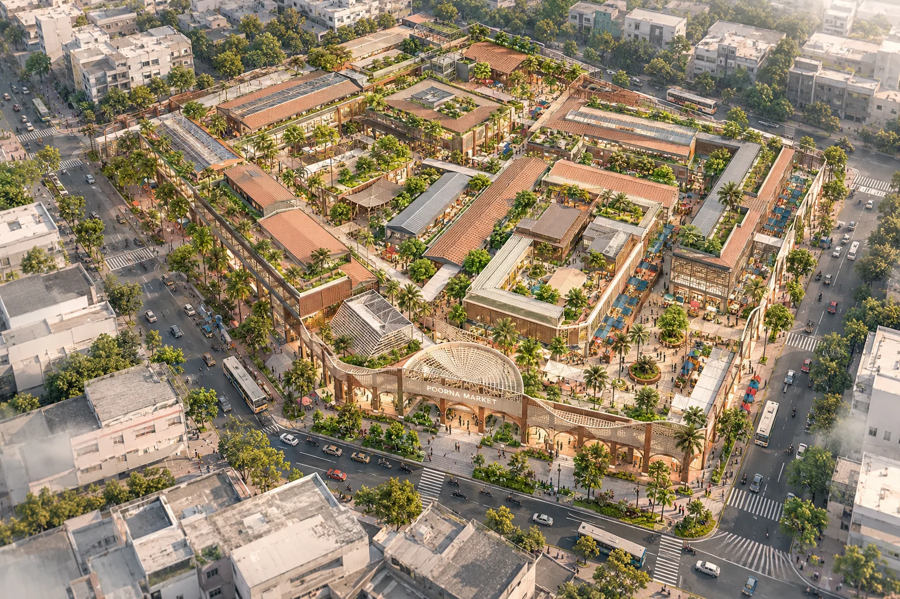
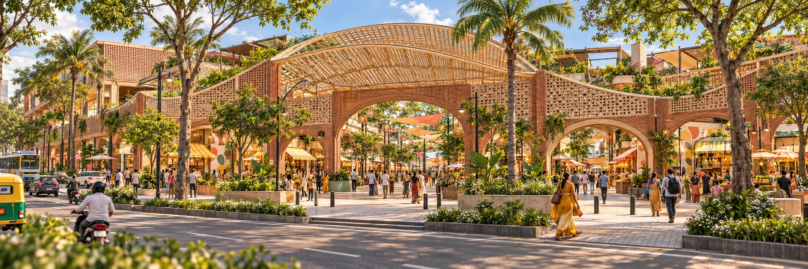

Explore Poorna Market
Hover over a marker to discover a place. Tap a marker on mobile.

A market made for the life around it.
Explore a proposal for a connected public market, from its city-facing entrance to the shaded streets, shared plaza and planted roof.
Start with the bird’s-eye view. Select a point to look closer.
Street-level scene

We couldn’t load this scene. Return to the bird’s-eye view or choose another location.
Design visualizationDesign intention
Five Places to Explore
Each view is a proposal image created from the project’s concept renders.
A public place, not just a collection of stalls.
The proposal brings market activity and everyday city life together through shaded routes, places to pause, planted edges and a mix of retail experiences.
Proposal Characteristics
- Scale
- Urban-level market design proposal
- Market program
- Produce, textiles and small retail
- Public realm
- Street entrance, shaded routes, central plaza and planted roof
- Measured specifications
- Awaiting verified project drawings